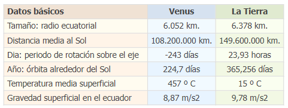

VENUS
Venus es el segundo planeta más próximo al Sol y el más cercano a la Tierra; tanto, que es posible verlo a simple vista desde la superficie terrestre. Esto es también posible debido a que es el cuerpo celeste más brillante del Sistema Solar exceptuando el Sol y la luna.
Índice
El origen de Venus
La fecha exacta del descubrimiento de Venus es desconocida: este brillante planeta se puede ver fácilmente a simple vista, y por eso estaba observado por antiguos astrónomos de diferentes civilizaciones desde los albores del tiempo.
Por lo tanto, no sabemos con certeza quién descubrió Venus; sin embargo, la clasificación de Venus como planeta se atribuye a Nicolás Copérnico y Galileo Galilei. Además, Galilei realizó la primera observación precisa de Venus en 1610: observó el planeta a través de un telescopio y descubrió sus fases, que son similares a las de la Luna.
Este descubrimiento apoyaba el sistema heliocéntrico, un modelo astronómico según el cual los planetas orbitan alrededor del Sol y no al revés.
El origen de su nombre
Los romanos le pusieron este nombre por su belleza en honor a Venus, su diosa del amor, equivalente a la griega Afrodita. Venus y Gea (Tierra) son los únicos planetas del Sistema Solar que tienen nombres de diosas.
Características físicas de Venus
Venus es un planeta rocoso, sin satélites y sin anillos. Se trata de un planeta extremo, caliente, seco y con una presión en la superficie 90 veces superior a la terrestre. Es de hecho el planeta más caliente de todos a pesar de no estar más cerca del Sol que Mercurio, y aunque sus dimensiones son muy similares a las de la Tierra, su atmósfera y composición hacen que la vida sea muy poco probable
Se sabe que Venus tiene una superficie sólida que presenta varios tonos de gris, con muchos cráteres y cañones. Estos cráteres miden de 1.5 a 2 kilómetros y no se evidencian más pequeños; pues los meteoritos de menor magnitud son destruidos en la atmósfera antes de que consigan llegar a la superficie.
Los sistemas volcánicos conforman una especie de canales sinuosos que se extienden a lo largo de cientos de kilómetros y que alcanzan los 4,000 kilómetros de longitud. Existen dos áreas de tierras altas: Ishtar Terra en la región norte con un tamaño similar al de Australia; y Aphrodite (Afrodita) Terra, con una longitud de 10,000 kilómetros y un tamaño equiparable al de América del Sur. La montaña más alta es Maxwell Montes, que tiene una altura de casi 11 kilómetros.
La atmósfera gaseosa de Venus fue descubierta en 1761 por el polímata ruso Mijaíl Lomonósov. Observando el tránsito de Venus a través del disco solar, Lomonosov vio un anillo de luz alrededor del disco del planeta. Supuso correctamente que este fenómeno podría deberse a la refracción de los rayos del Sol en la densa atmósfera venusiana.
El tiempo en Venus
Curiosamente, este planeta interno realiza una rotación en el sentido de las manecillas del reloj, es decir, de este a oeste. Completa su órbita alrededor del Sol en 224 días y 17 horas terrestres o para fines prácticos, en 225 días. En ocasiones se aleja del astro rey mucho más que Mercurio, lo que ocasiona que preceda al Sol en poco más de tres horas. Un día en Venus dura 243 días terrestres.
Venus y el planeta Tierra
La siguiente tabla muestra algunos datos básicos del planeta Venus comparados con los de la Tierra:

Galería de imágenes
Referencias
- Descubre el asombroso planeta Venus
- Venus, el planeta más caluroso
- El planeta Venus
- Todo sobre Venus
| ◄ Anterior | Siguiente ► |
| Mercurio | Tierra |